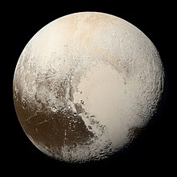

Pluto ( ♇ )click here for more images from NASA |
|
This article is about the dwarf planet.
Pluto is a dwarf planet in the Kuiper belt, a ring of bodies beyond the orbit of Neptune. It is the ninth-largest and tenth-most-massive known object to directly orbit the Sun.It is the largest known trans-Neptunian object by volume, by a small margin, but is slightly less massive than Eris. Like other Kuiper belt objects, Pluto is made primarily of ice and rock and is much smaller than the inner planets. Compared to Earth's moon, Pluto has only one sixth its mass and one third its volume.
Pluto has a moderately eccentric and inclined orbit, ranging from 30 to 49 astronomical units from the Sun. Light from the Sun takes 5.5 hours to reach Pluto at its average distance. Pluto's eccentric orbit periodically brings it closer to the Sun than Neptune, but a stable orbital resonance prevents them from colliding.
Pluto has five known moons: Charon, the largest, whose diameter is just over half that of Pluto; Styx; Nix; Kerberos; and Hydra. Pluto and Charon are sometimes considered a binary system because the barycenter of their orbits does not lie within either body, and they are tidally locked. The New Horizons mission was the first spacecraft to visit Pluto and its moons, making a flyby on July 14, 2015 and taking detailed measurements and observations.
Check out here for more history about pluto Check out here for latest news about pluto